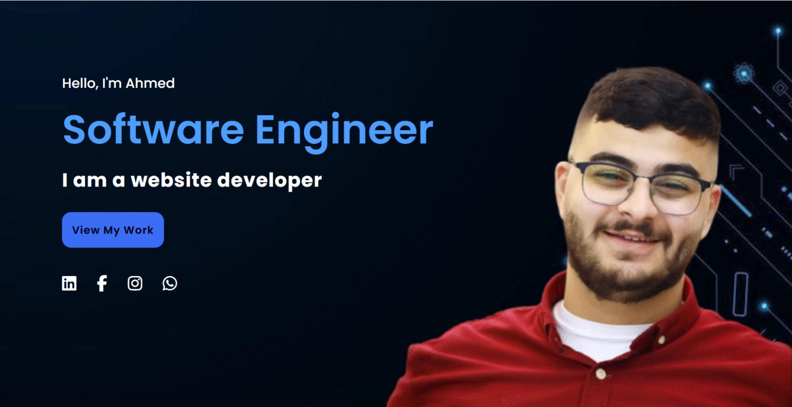

<p>Ahmed Dawoud is a dedicated Computer Systems Engineering student at Palestine Technical University - Kadoorie, set to graduate in 2026. With strong skills in HTML5, CSS, SQL, C++, Java, and experience in problem-solving and data visualization with Matplotlib, Ahmed is well-versed in both front-end and back-end development. His moderate proficiency extends to Python programming, NoSQL databases, and VHDL. Ahmed has successfully led technical and professional development initiatives as President of both the Computer Systems Engineering Club and the IEEE Student Branch, demonstrating his leadership and commitment to advancing STEM education. His notable projects include a detailed retail sales analysis and a healthcare support website for Gazans. </p>

